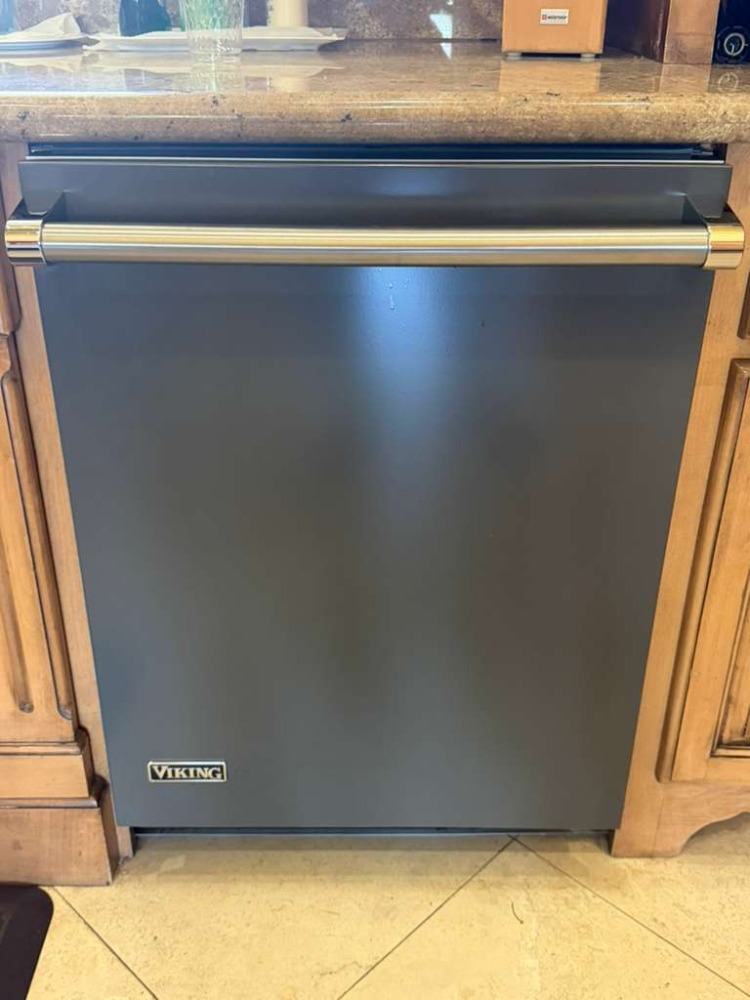
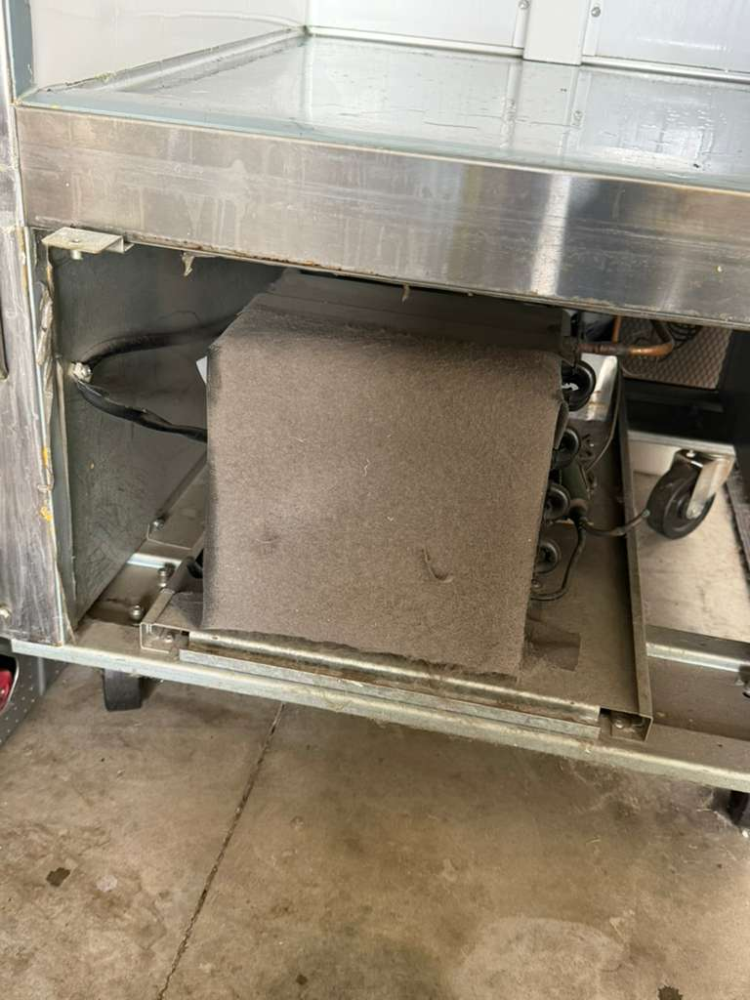
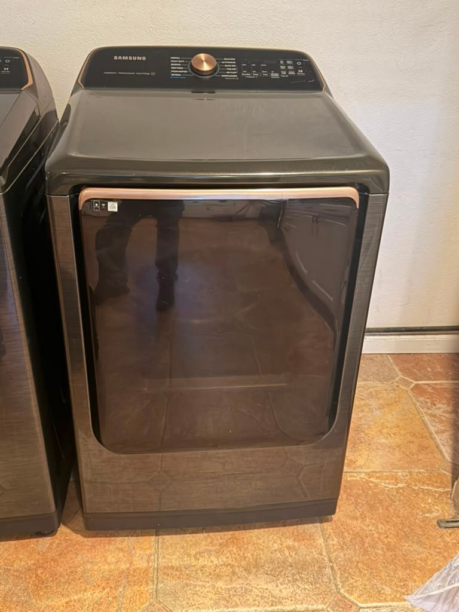

Viking · Range · Pico Rivera, CA
Repairs for refrigerators, washers, dryers, ovens and dishwashers across Downey ZIP codes 90240, 90241 and 90242. Same-day service from licensed, insured technicians.
5.0 · 160 Google reviewsMon–Sat, 8am–7pm. Two-hour arrival window. The technician calls before arriving.
See neighborhoods and ZIP codes
Family-owned since 2017 · Licensed, bonded & insured
These jobs were completed at addresses in neighboring Pico Rivera, not in Downey. They show the kind of work we do close by, from everyday laundry rooms to Viking and Dacor kitchens.
Viking · Range · Pico Rivera, CA

Viking · Dishwasher · Pico Rivera, CA

Refrigeration · Pico Rivera, CA

From our 160 verified 5-star Google reviews
I had a great experience with this appliance repair service. The technician arrived on time, was very professional, and fixed my stove and microwave very neatly and efficiently. He kept his appointment exactly as promised and made sure everything was working properly before he left. I'm very satisfied with the service and would definitely recommend him to others.
I had my dryer vent cleaned and was very happy with the service. The technician was professional, friendly, and took the time to thoroughly clean the vent and explain what was being done. I noticed a difference in the dryer’s performance afterward, and I feel much better knowing the vent is clean and properly maintained. I would definitely recommend this service to anyone needing their dryer vent cleaned!
AG fixed my Dryer. He discovered that the whole exhaust system was crammed with dust and valiantly crawled under the house amidst the dust and spiders and saved the day. He also diagnosed why my drawer fridge was whining, he told me to defrost it, duh. He is great, I would recommend him highly.
Choose the appliance that is acting up to open its full guide, with typical symptoms and supported brands.
Use the linked brands in the brand list further down this page to jump to the faults we see most often on each one; we also service Dacor and DCS.
These brands are repaired by an independent company, so no factory authorization is implied. For an appliance still under manufacturer warranty, start with the manufacturer.
Every Downey visit starts with a flat $99 diagnostic fee, and that amount is credited toward the repair if you approve the work.
Repair costs depend on the brand, the part needed, and what the diagnosis finds, and you get the final quote in writing first. Full pricing guide
We serve Downey addresses in ZIP codes 90240, 90241 and 90242. The 90239 ZIP is a post-office box designation only, so there are no street addresses to visit there. If you are describing your location by phone, the crossings of Firestone Blvd, Lakewood Blvd and Florence Ave are an easy way to orient us, along with your street address.
Downey is one of the Gateway Cities of southeast Los Angeles County. Landmarks include the Columbia Memorial Space Center, a 20,000-square-foot interactive science center that opened in 2009 on the former Rockwell plant site, and Stonewood Center, the shopping center at 251 Stonewood St that opened in 1958. At Lakewood Blvd and Florence Ave stands the oldest surviving McDonald's restaurant, dating from 1953.
Downey borders Pico Rivera, Santa Fe Springs, Norwalk, Bellflower, Paramount, South Gate and Bell Gardens. Whittier is also on our service list.
Two published facts about Downey say a good deal about how kitchens and laundry areas here are built and supplied.
The median home in Downey was built in 1959, and 53.6% of the city's housing units are 1-unit detached houses, according to the U.S. Census Bureau, American Community Survey 2024. The rest are attached homes, apartments and other housing types.
A median build year describes the neighborhood as a whole, not any one kitchen, and plenty of older homes have been remodeled. Whether you have a house with a garage laundry area or an apartment with a closet hookup, tell us when you book so we can plan the visit around your setup.
The City of Downey's water comes from groundwater wells in the Central Basin. The city's 2024 water quality report lists average total hardness of 15.7 grains per gallon. Hardness is dissolved calcium and magnesium, and it is the reason the report quotes a figure at all.
Those minerals can leave a chalky scale where water is heated or evaporates: on a dishwasher's heating element and spray arms, on a washer's door seal and heating element, and inside fittings and fill screens on the water line. Scale does not explain every fault, so a technician checks the filter, the valves and the drain before pointing at the water.
Sources: U.S. Census Bureau, American Community Survey 2024; City of Downey water quality report, 2024. The water figure describes City of Downey water customers.
Independent repair service. Not affiliated with or endorsed by these manufacturers; brand names and logos are trademarks of their owners.
Universal Appliances Repair Group Inc. serves Downey, CA, across ZIP codes 90240, 90241 and 90242, with repairs for refrigerators, washers, dryers, dishwashers, ovens, stoves, freezers, garbage disposals and wine coolers, from everyday brands to premium built-ins. Same-day service is available, and booking takes a short call or a few minutes online.
We also serve nearby Pico Rivera and Whittier. Call (949) 629-5365 or book online.
Still have a question? Call (949) 629-5365.
Same-day service across Downey ZIP codes 90240, 90241 and 90242. Our technicians are licensed and insured, and each repair carries a 90-day parts / 30-day labor warranty.